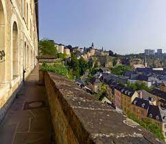
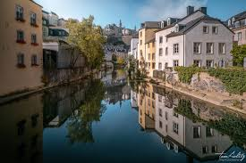
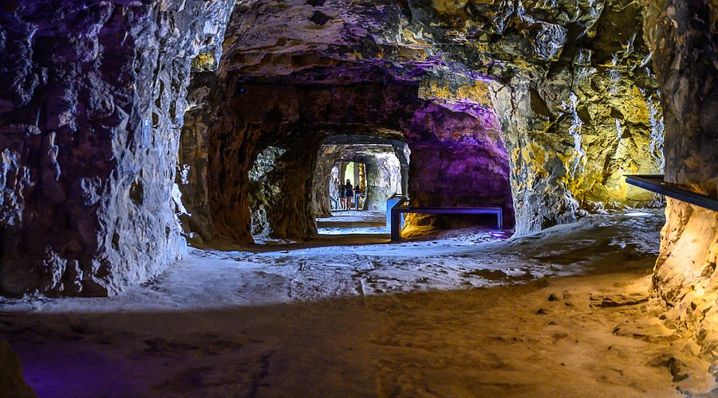
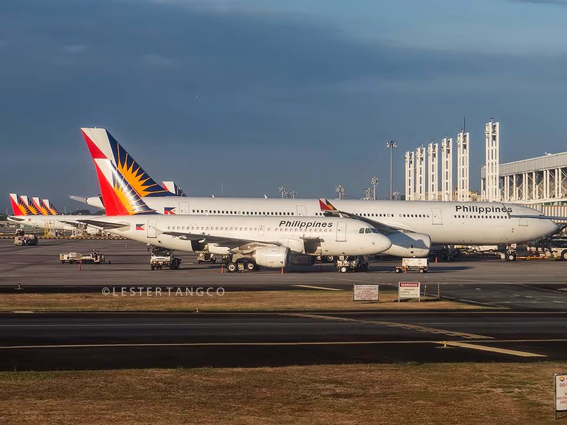

Why Luxembourg?
Luxembourg is appealing because it has beautiful castles, a charming old town, and stunning nature. I would love to walk through the historic streets,
see the fortress walls, and explore the scenic hiking trails. It’s a safe and peaceful country, making it a perfect place for a memorable trip.
Additionally, the local cuisine offers delightful flavors that reflect the country's rich cultural heritage, making every meal an adventure.
Visiting the vibrant markets would allow me to experience the warmth of the local community and sample fresh produce.

Chemin de la Corniche – Known as "the most beautiful balcony of Europe," this scenic promenade offers breathtaking views of the Alzette River valley and the charming old town below.

Grund – A picturesque historic district nestled at the base of Luxembourg City. It's famous for its quaint streets, stone bridges, and vibrant nightlife, making it a must-visit for both history lovers and partygoers.

Casemates du Bock – These ancient fortifications, carved into rock, date back to the 17th century. They offer a glimpse into Luxembourg's military past and provide stunning views of the city.

Getting There:
To travel from Manila to Luxembourg, you will first need to book a flight, as there are no direct flights between the two cities.
Most travelers typically connect through major European hubs such as Frankfurt, Paris, or Amsterdam. Upon arrival in one of these cities,
you can catch a connecting flight or take a train to Luxembourg City. It’s advisable to check visa requirements, as you may need a Schengen
visa for entry into Luxembourg. Once in Luxembourg, public transportation options like buses and trains make it easy to navigate the city and surrounding areas.